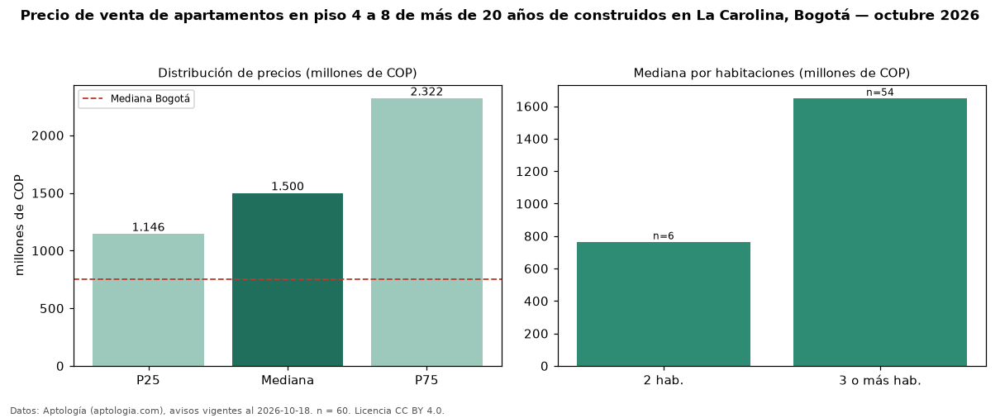

Precio de venta de apartamentos en piso 4 a 8 de más de 20 años de construidos en La Carolina, Bogotá — octubre 2026
En La Carolina (localidad de Usaquén), Bogotá, la mediana de precio de venta de apartamentos en piso 4 a 8 de más de 20 años de construidos es COP 1,50 mil millones, según 60 avisos vigentes. Eso es 6 % menos que la mediana de los apartamentos en piso 4 a 8 en venta de La Carolina (COP 1,60 mil millones, n = 132); este segmento reúne el 45 % de esos avisos. Por metro cuadrado, la mediana es COP 7,12 millones/m² (n = 60), 4 % por debajo de los apartamentos en piso 4 a 8 en venta de La Carolina (COP 7,44 millones/m²). El área mediana anunciada es 230 m². El segmento con más oferta es el de 3 o más habitaciones (54 avisos, mediana COP 1,65 mil millones); pasar de 2 habitaciones a 3 o más habitaciones cambia la mediana +116 %. La administración mediana declarada es COP 1,60 millones al mes (n = 55). La mitad central de los avisos va de COP 1,15 mil millones a COP 2,32 mil millones (razón 2,0), una dispersión alta. El estrato más frecuente es 6 (98 % de los avisos con estrato). Datos: Aptología (aptologia.com), CC BY 4.0 — https://www.aptologia.com/venta/bogota/la-carolina. Archivos: PDF, CSV con las cifras y gráfica PNG.

| Avisos únicos | 60 |
|---|---|
| Percentil 25 | COP 1.146.250.000 |
| Mediana | COP 1.500.000.000 |
| Percentil 75 | COP 2.322.500.000 |
| Mediana por m² | COP 7.120.548 |
Fuente: avisos vigentes de portales inmobiliarios recopilados por Aptología, deduplicados (mínimo 30 avisos únicos por celda). Precios pedidos, no cerrados. Fecha: 2026-10-18.